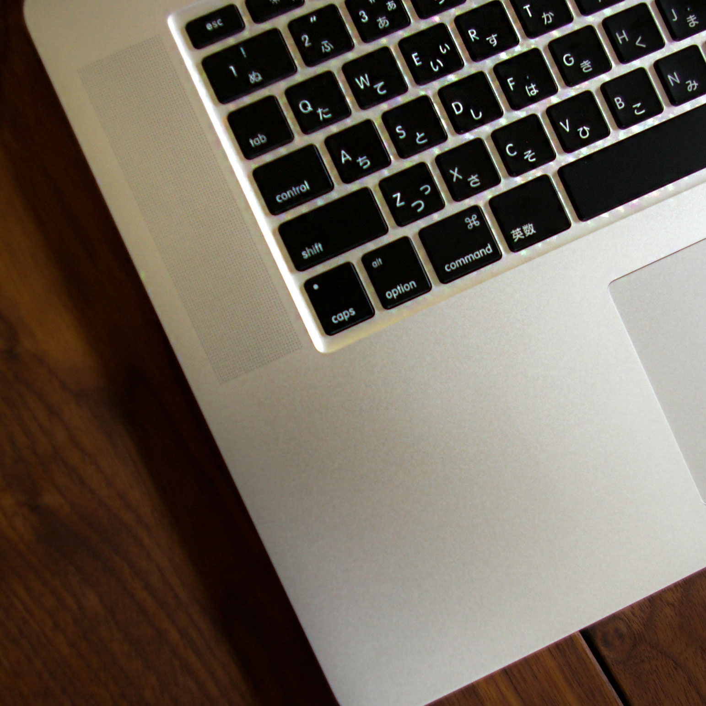
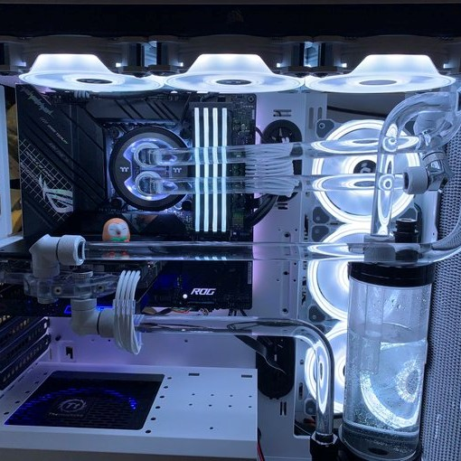

Home
About
Works
How to
Contact
Home
About
Works
How to
Contact
PC Gallery
PCギャラリー
My Build PC
私がこれまでに自作したPCは以下の通りです。
今後は通常のPC以外にも、個人的にサーバーPCの構築にも挑戦してみたいと考えています。
My PC(2Gen)-2022/05～
NEW
Friend Request-2021/04～
My PC(1Gen)-2020/03～

Family Use PC-2018/12～
Everyone's PC
いろんな人の自作PCをギャラリーにしてみました。
画像をクリックするとそれぞれのTwitterに飛びます。
投稿は
こちら
レノさん

Ftn@看護学生さん
ZOTAC日本さん
天使の力さん
たまさん
アルティメット後藤さん
がうるさん
やまとしさん
oxio0940さん
やつさん
↑